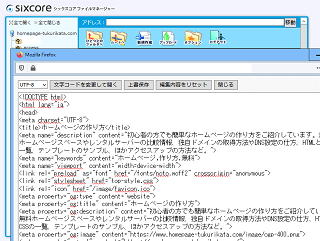
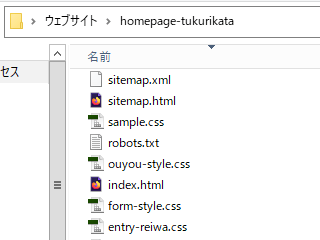
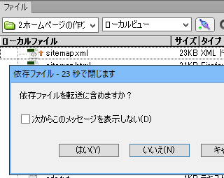

トップページを複製しての作り方
趣味やサークルなどの個人向けのホームページを作成する場合、ページ数でいえば、10～20ページ程度の小規模なケースが多いと思います。
そのような場合、特にホームページ作成ソフトを用意する必要はなく、ウェブ上のファイルマネージャーでファイルを直接編集して作成することができます。
例えば、こちらは当ホームページが利用しているレンタルサーバーのファイルマネージャーになりますが、無料ホームページスペースでもこのような編集画面がデフォルトで用意されていることが多いです。
■ファイルマネージャーの例

こちらにテンプレートをコピペで貼り付けたのち、文言などを修正すれば、10分程度でも簡単に作成することができます。もしそれで機能するようでしたら、特にホームページ作成ソフトを用意する必要はありません。
さらに個別ページを増やしたい場合、作成したトップページのHTMLとCSSファイルを元に個別ページも複製して作成していくことができます。
ファイルマネージャーでファイルを直接編集する方法
ウェブ上のサーバーでファイルを直接編集しながら作る場合、実際のサイトにもリアルタイムで反映されるため、ブラウザで表示を確認しながら作ることができます。
この場合、ファイルマネージャーで最初の１ページ目となるトップページを作成し、そのHTMLとCSSのテンプレートを元に他のページもコピペで複製して作るのが効率的です。コピー＆ペーストを活用することで、初心者でも簡単にホームページを作成することができます。
その最初の１ページ目をどうするのかについては、当ホームページでテンプレートのサンプルがありますので、そちらを参考にしてみることをおすすめします。
例えば、このページについては、トップページのHTMLソースをそのままコピペで流用し、中身の文章を書き換えるだけで簡単に作成しています。
数十ページ程度のサイトの場合、CMSやホームページソフト作成を設定してから使うよりも、そのまま直接ページを作ってしまった方が効率的です。アップロードする手間が省けますし、ソフトの使い方やFTP接続の設定などにかける時間も省くことができます。
ただし、新しくページを追加した際、サイドバーなどにそのページへの内部リンクを手動で追加する必要があるため、ページ数が多くなると次第に面倒になってくるデメリットがあります。
パソコン上で作成してサーバーにアップロードする方法
一方、何らかのホームページ作成ソフトを使用する場合、ソフトの管理画面で新規ファイルを編集した後、一旦はパソコン上にHTMLファイルやCSSが出力されることになります。
当サイトもファイル数が多くなってからはDreamweaverの作成ソフトを使用していますが、パソコン上にはこのようなファイルが出力されています。

これらの出力されたファイルをFTP接続でサーバーに転送することで、実際にサイトが表示される仕組みになっています。

あるいは、ホームページ作成ソフトではなく、メモ帳やテキストエディタなどの無料ソフトを使い、パソコン上でHTMLタグを手打ちしてファイルを作成した後、FFFTPなどの無料ツールを使い、FTP接続でアップロードするのも同じ方法になります。
この場合、「パソコン上」と「サーバー上」にそれぞれファイルが存在することになりますが、パソコン上のファイルを修正してもサーバーにアップロードするまではサイトは更新されません。
いずれの方法でも、ウェブ上の無料ホームページスペースやレンタルサーバー内にファイルがありさえすれば、実際にサイトが表示されることになります。